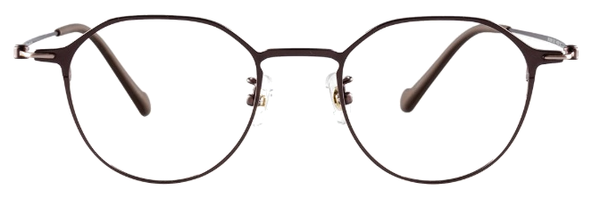
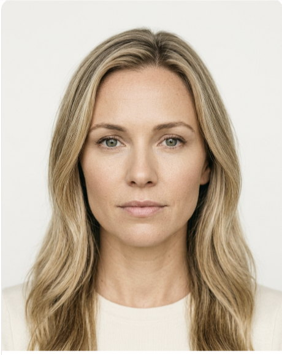
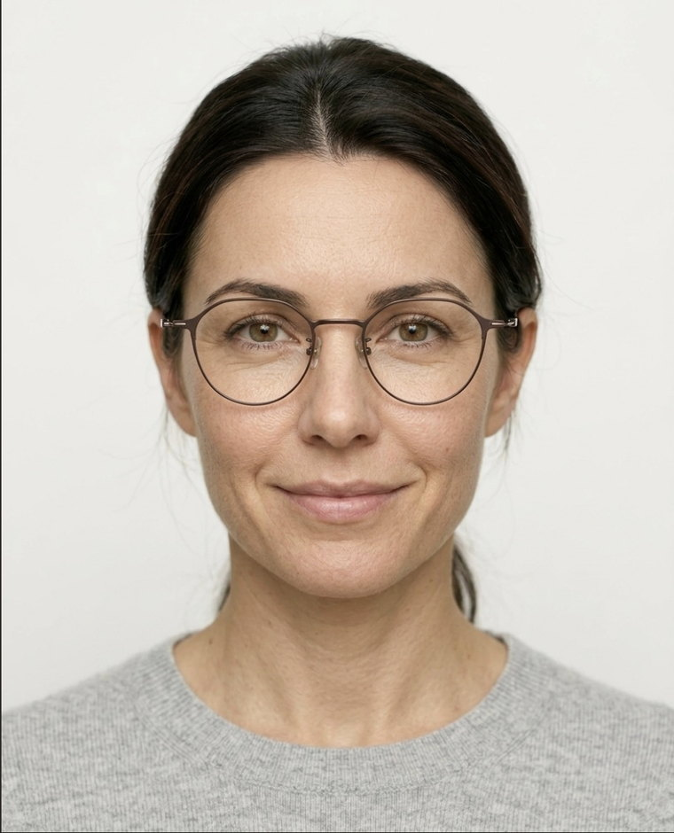
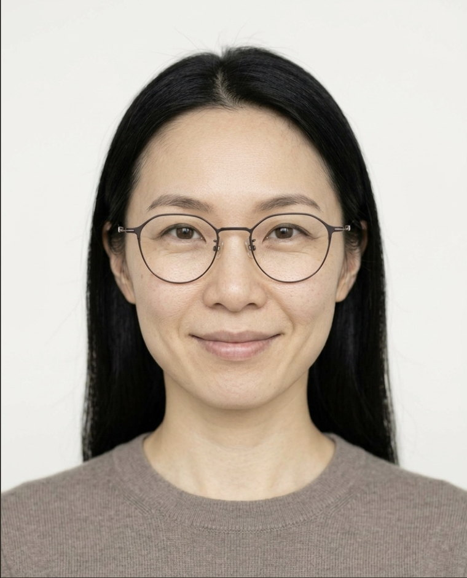
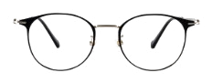
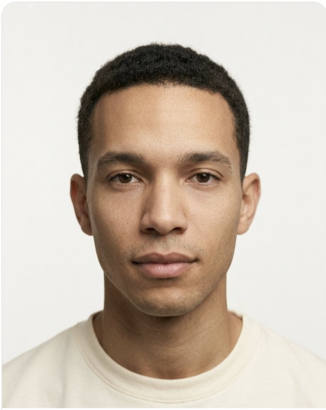
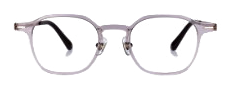

- Product nameHana
- Product descriptionGenerated
- SEO descriptionGenerated
- MetadataGenerated
- Product attributesGenerated
- Target consumerIdentified
Hana
Meet
SORA
Your AI–powered growth engine
DR22009
Dormann · the Americas · 3 of 29 cities assigned
18 wordsRule · one line, 15 to 20 words
Title 53 / 60Meta 124 / 155
0 grams
About as light as three sheets of paper.
A sheet of printer paper weighs about 5 grams
Six–point image check · passed
Instagram · three posts queued

A style code is not a product
DR22009
Dormann · the Americas · 3 of 29 cities assigned
01 · Product specs and description
02 · Understanding
Hana
03 · The cast
Two faces selected for Hana · low bridge, warm undertone
SORA studies the frame, then selects the models that bring the product to life.
04 · Generated
 Source photo
Source photo

Anchor Generated
Generated
Source · once




05 · The campaign




Weeks of creative production.
Generated in one intelligent workflow.
Free shipping on every order · 10% off your first pair with code NOON10
Try on
13g · so light